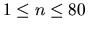

| Formatting Text |
Writings e-mails is fun, but, unfortunately, they do not look very nice, mainly because not all lines have the same lengths. In this problem, your task is to write an e-mail formatting program which reformats a paragraph of an e-mail (e.g. by inserting spaces) so that, afterwards, all lines have the same length (even the last one of each paragraph).
The easiest way to perform this task would be to insert more spaces between the words in lines which are too short. But this is not the best way. Consider the following example:
**************************** This is the example you are actually considering.
Let us assume that we want to get lines as long as the row of stars. Then, by simply inserting spaces, we would get
**************************** This is the example you are actually considering.
But this looks rather odd because of the big gap in the second line. By moving the word ``are'' from the first to the second line, we get a better result:
**************************** This is the example you are actually considering.
Of course, this has to be formalized. To do this, we assign a badness to each gap between words. The badness assigned to a gap of n spaces is (n - 1)2. The goal of the program is to minimize the sum of all badnesses. For example, the badness of the first example is 1 + 72 = 50 whereas the badness of the second one is only 1 + 1 + 1 + 4 + 1 + 4 = 12.
In the output, every line has to start and to end with a word. (I.e. there cannot be a gap at the beginning or the end of a line.) The only exception to this is the following:
If a line contains only one word this word shall be put at the beginning of the line, and a badness of 500 is assigned to this line if it is shorter than it should be. (Of course, in this case, the length of the line is simply the length of the word.)
The input file contains a text consisting of several paragraphs. Each paragraph is preceded by a line containing a single integer n, the desired width of the paragraph ( ).
Paragraphs consist of one or more lines which contain one or more words each. Words consist of characters with ASCII codes between 33 and 126, inclusive, and are separated by spaces (possibly more than one). No word will be longer than the desired width of the paragraph. The total length of all words of one paragraph will not be more than 10000 characters.
Each paragraph is terminated by exactly one blank line. There is no limit on the number of paragraphs in the input file.
The input file will be terminated by a paragraph description starting with n=0. This paragraph should not be processed.
Output the same text, formatted in the way described above (processing each paragraph separately).
If there are several ways to format a paragraph with the same badness, use the following algorithm to choose which one to output: Let A and B be two solutions. Find the first gap which has not the same length in A and B. Do not output the solution in which this gap is bigger.
Output a blank line after each paragraph.
28 This is the example you are actually considering. 25 Writing e-mails is fun, and with this program, they even look nice. 0
This is the example you are actually considering. Writing e-mails is fun, and with this program, they even look nice.